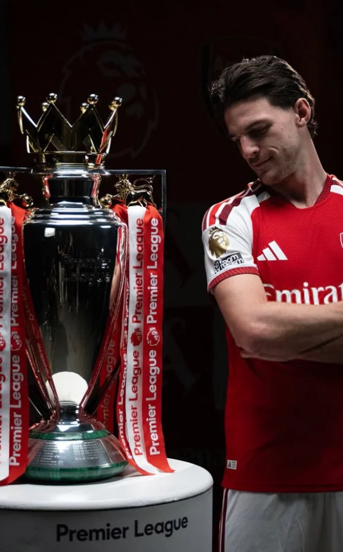
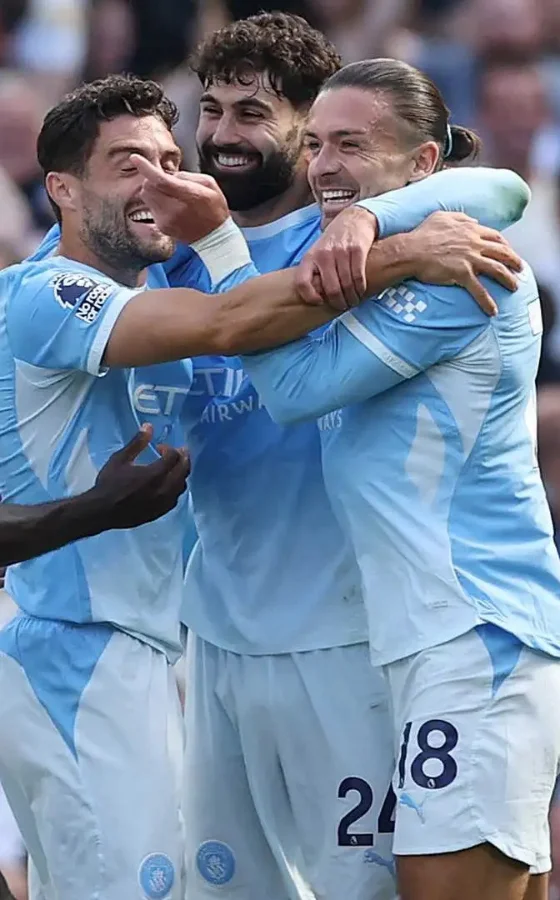
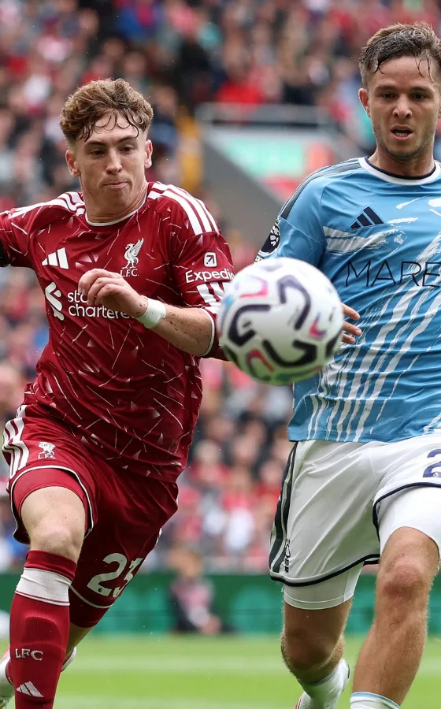
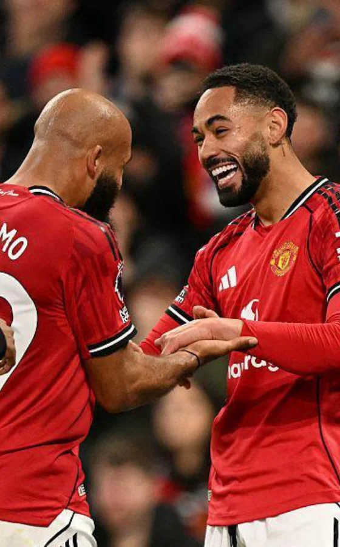

Mobile friendly
Every screen is shaped for one hand and a small display
Metro Football is a home for tools and reports that turn noisy gameweek data into clear next steps. We built it for managers who check their team on the bus, on the sofa, and five minutes before the whistle.
Mobile friendly
Every screen is shaped for one hand and a small display
Tools and reports
Personal squad tools and free weekly reports in one place
Clear next steps
We explain what to do next without jargon or filler
We want every FPL manager to feel ready when the deadline hits. That means fewer tabs, fewer guesses, and more confidence in the transfer or captain call you are about to make.
Metro Football links to your FPL team when you choose Premium, reads the same public data you already trust, and turns it into guidance you can act on in seconds.
We split the product into two parts so you always know where to look.

See the move that fits your budget and formation

Score your squad and pick a captain with clear reasons

Spot kind and tough runs before you transfer

Read who is out and who may return this week
We design Metro Football like a mobile app that lives in your browser. That shapes every choice we make.
Large tap targets, scroll friendly layouts, and pages that load fast even with weak internet connection.
We show the answer first, then the detail if you want to dig in.
We explain limits, cite public FPL data, and never pretend a tool can see the future.
If you pay for Premium and do not win your main mini league by the end of the season, we refund what you paid.
Metro Football is built and run by a small product team that lives inside the FPL calendar. We ship updates when the game moves, not when a slide deck says we should.
Powered by origynlabs.
origynlabs is a tech provider and software solutions partner of Metro Football. We use their proprietary APIs to power our FPL prediction model and game engine
Get updates, tips, and product news during the season.
Create a free account to open reports and your dashboard. Upgrade when you want personal tools tied to your squad.